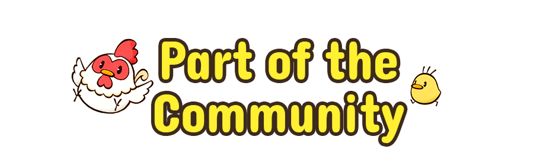
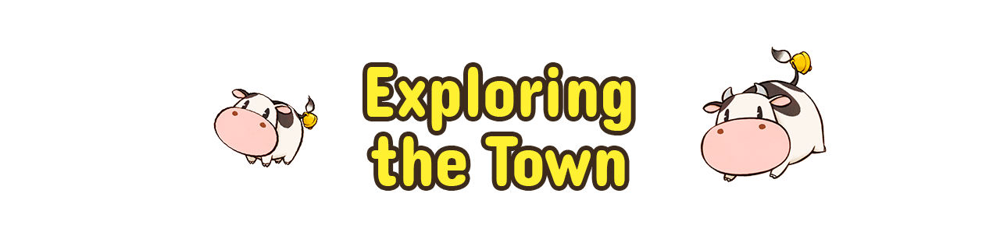
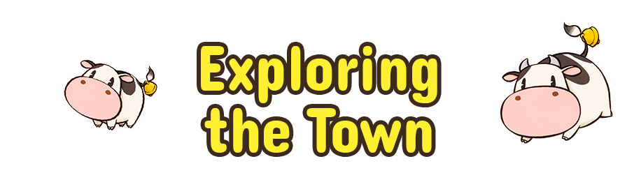
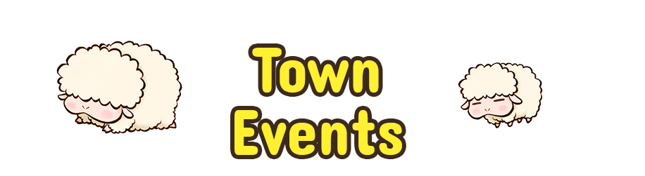
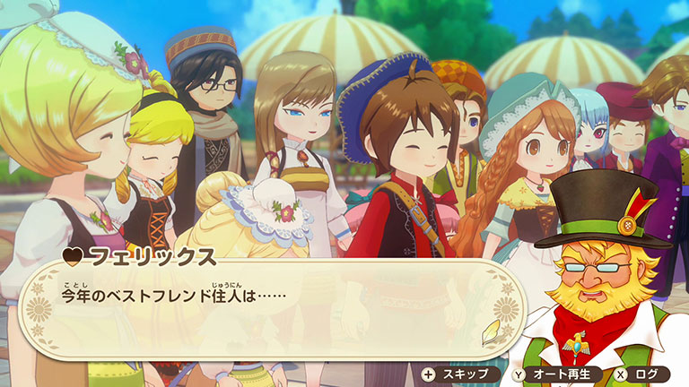
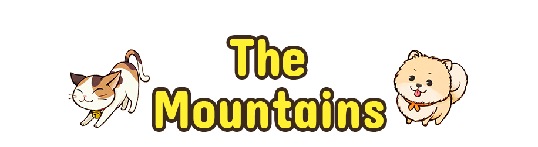
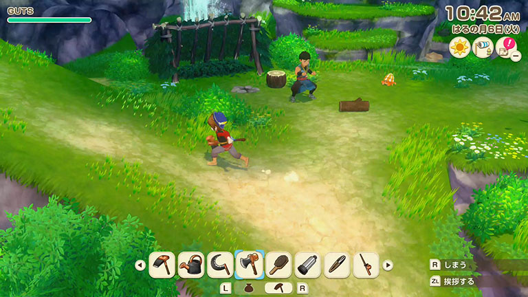

-
Prizes
Winners of local competitions and shows receive trophies and prizes. These trophies can be displayed on the shelves in your house.

-
The Mountains
In time, you'll be able to explore the mountainous area outside of town. Here you'll find rare ore, bugs, and fish, as well as space to take up beekeeping and mushroom cultivating.